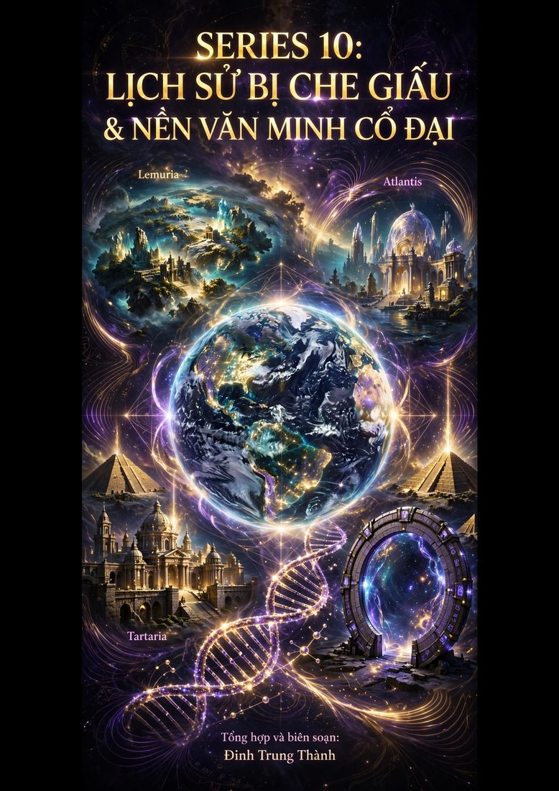

Trang chủ / Chuyên đề / Chuyên đề 10

Chuyên đề 10 · 10 kỳ
Lịch Sử Bị Che Giấu & Nền Văn Minh Cổ Đại
Lemuria, Atlantis, Đại Hồng Thủy, Khem, Great Tartaria, Mud Flood, Space Arks, NWO và sự thức tỉnh.
-
Kỳ 91
LỤC ĐỊA LEMURIA (MU) & NỀN VĂN MINH TÂM THỨC 5D NGUYÊN THỦY
1. Sự Hình Thành Lục Địa Mu Và Chủng Tộc Khởi Nguyên Alithir Bảng 1 — So sánh chủng tộc Alithir (Lemuria) và con người vật lý 3D Tiêu Chí So Sánh Chủng Tộc Khởi Nguyên Alithir (Lemuria) Con Người Vật Lý 3D Hiện Đại Thể Xác & Mật Độ Thể dĩ thái - tinh thể bán…
Đọc kỳ này → -
Kỳ 92
ĐẾ CHẾ ATLANTIS & KỶ NGUYÊN CÔNG NGHỆ TINH THỂ MẸ (CRYSTA-TECH)
1. Bối Cảnh Lịch Sử Sự Ra Đời Của Cường Quốc Atlantis Bảng 3 — Lemuria và Atlantis: hai mô hình văn minh Tiêu Chí So Sánh Nền Văn Minh Lemuria (Mu) Nền Văn Minh Atlantis Vị Trí Địa Lý Đại lục Thái Bình Dương (Hawaii - New Zealand - Đảo Phục Sinh) Lục địa Bắc…
Đọc kỳ này → -
Kỳ 93
ĐẠI CHIẾN ATLANTIS VS LEMURIA & THẢM HỌA TINH THỂ NĂNG LƯỢNG
1. Mầm Mống Mất Cân Bằng: Sự Tha Hóa Của Tầng Lớp Tư Tế Atlantis Thời kỳ hoàng kim rực rỡ của nền văn minh Atlantis bắt đầu xuất hiện những vết nứt sâu sắc khi xã hội tiến vào Kỷ Nguyên Bò Cạp (Age of Scorpio). Sự thịnh vượng vật chất quá mức, kết hợp với…
Đọc kỳ này → -
Kỳ 94
TRẬN ĐẠI HỒNG THỦY CỔ ĐẠI & SỰ SỤP ĐỔ CỦA ATLANTIS
1. Trận Đại Hồng Thủy 9.600 TCN Trong Ký Ức Nhân Loại Khoảng 11.600 năm trước, toàn bộ đế chế Atlantis chìm xuống đáy Bắc Đại Tây Dương trong một biến cố được ghi lại trong mọi nền văn hóa nhân loại dưới cái tên "Trận Đại Hồng Thủy". Theo Plato (Timaeus &…
Đọc kỳ này → -
Kỳ 95
DI SẢN ATLANTIS TẠI KHEM (AI CẬP CỔ ĐẠI) & MẠNG LƯỚI HALL OF RECORDS
1. Hành Trình Tái Thiết Văn Minh Của Thoth Tại Khem Sau khi thảm họa Đại Hồng Thủy năm 9.600 TCN nhấn chìm lục địa Atlantis, một nhóm tư tế và nhà khoa học tinh hoa thuộc khối Law of One do Thoth (người Anunnaki được biết đến dưới tên gọi Ningishzida hay…
Đọc kỳ này → -
Kỳ 96
ĐẾ CHẾ TOÀN CẦU GREAT TARTARIA & CÔNG NGHỆ NĂNG LƯỢNG MIỄN PHÍ TỪ TRƯỜNG
1. Sự Thật Về Đế Chế Great Tartaria Bị Xóa Sổ Khỏi Sách Giáo Khoa Trong toàn bộ các chiến dịch làm sai lệch lịch sử loài người, việc xóa sổ sự tồn tại của Đế Chế Toàn Cầu Great Tartaria (Đại Tartaria) ra khỏi các cuốn sách giáo khoa lịch sử chính thống trong…
Đọc kỳ này → -
Kỳ 97
TRẬN LỤT BÙN (MUD FLOOD) & CÁC CHIẾN DỊCH "GREAT RESET" XÓA SỔ LỊCH SỬ
1. Giải Mã Thảm Họa Lụt Bùn (Mud Flood) Giữa Thế Kỷ 19 Nếu đế chế Great Tartaria từng là một siêu nền văn minh toàn cầu sở hữu công nghệ năng lượng miễn phí rực rỡ, thì điều gì đã khiến nền văn minh này biến mất hoàn toàn khỏi Trái Đất chỉ trong vòng chưa đầy…
Đọc kỳ này → -
Kỳ 98
MẠNG LƯỚI HÒM KHÔNG GIAN CỔ ĐẠI (SPACE ARKS) NGỦ ĐÔNG
1. Sự Thức Tỉnh Của Các Hòm Không Gian Cổ Đại (Space Arks) Trong lịch sử exopolitics và các chương trình nghiên cứu không gian bí mật, một sự kiện mang tầm vóc chuyển giao thời đại đã diễn ra từ quý IV năm 2021: Sự Tái Khởi Động Đồng Loạt Của Mạng Lưới Các…
Đọc kỳ này → -
Kỳ 99
SỰ THAO TÚNG LỊCH SỬ CỦA NWO & MA TRẬN XÓA KÝ ỨC TIỀN KIẾP
1. Cơ Chế Bẻ Gãy Niên Đại Học Và Sự Giả Lập Lịch Sử NWO Khi nhìn lại toàn bộ bức tranh lịch sử Trái Đất — từ sự sụp đổ của Atlantis, Lemuria cho đến sự bôi xóa đế chế Great Tartaria — một câu hỏi nhức nhối đặt ra: Làm thế nào mà một nhân loại từng sở hữu công…
Đọc kỳ này → -
Kỳ 100
SỰ THỨC TỈNH KÝ ỨC TẾ BÀO & KHÔI PHỤC KỶ NGUYÊN NĂNG LƯỢNG MIỄN PHÍ
1. Sự Thức Tỉnh Ký Ức Tế Bào Trong Dải Tần Số 5D Hành trình đi qua 9 kỳ bài viết của Series 10 đã đưa chúng ta đi qua trọn vẹn những trang sử bị che giấu nhất của Trái Đất — từ thời kỳ hoàng kim của Lemuria và Atlantis, những cuộc chiến thảm khốc làm sụp đổ…
Đọc kỳ này →